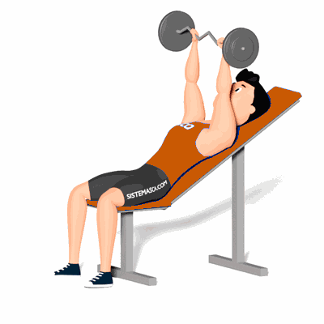

Extensão de Tríceps em Banco Inclinado

O principal movimento nesse exercício é a extensão de cotovelo, portanto o tríceps braquial. Realizar o exercício no banco inclinado é uma opção para poder treinar com intensidade e assim estimular a musculatura em termos de ganho de força e hipertrofia.
Ficha Técnica
Tipo: Musculação
Grupo Muscular: Tríceps
Aparelho: Nenhum
Músculos: Nenhum
Como realizar
- Configure um banco ajustável entre um ângulo de 30 e 45 graus e deite-se sobre ele;
- Com uma pegada pronada, segure a barra EZ com as mãos levemente menos afastadas que a largura dos ombros. Estenda os braços sobre o queixo;
- Contraia o abdômen e flexione os cotovelos para abaixar a barra sobre a cabeça;
- Faça uma pausa quando os antebraços estiverem paralelos ao chão, em seguida, estenda-os de volta à posição inicial contraindo os tríceps.
 RC STORE
RC STORE